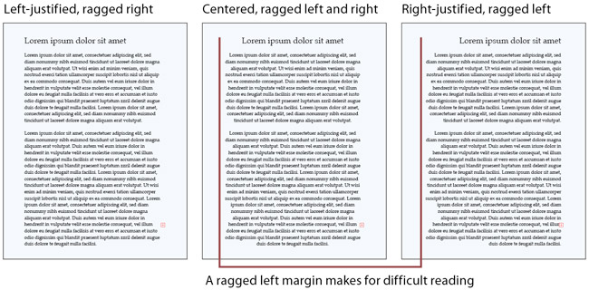

Principios de diseño de UI
Percepción
Percepción por experiencia
(pasado)
Percepción por contexto
(presente)
Percepción por metas
(futuro)
Recomendaciones de diseño
Evitar ambigüedad
Mantener la consistencia
Tener siempre presente las metas del usuario
Visión y estructura
La visión impone estructura a la entrada visual, está "programada" para percibir formas o figuras más que líneas desconectadas
(gestalt)
proximidad
similaridad

continuidad
clausura

simetría
destino común
Lectura
- Características visuales
- Caracteres
- Morfemas
- Palabras
- Oraciones
- Párrafos
Libre de contexto
- libre de contexto
- abajo-hacia-arriba
- guiada por características visuales
- automático
Dependiente de contexto
- dependiente de contexto
- arriba-hacia-abajo
- guiada por patrones de alto nivel
- consciente
El mal diseño de información puede interferir con el proceso de lectura.
Vocabulario poco común
"Su sesión ha expirado. Por favor autentíquese nuevamente."
"Su sesión ha expirado. Loguéese de nuevo"
Fuentes complicadas o poco comúnes
Fuentes pequeñas
Texto sobre ruido
Información oculta por repetición
Interferencia por alineamiento
Reducir la lectura a lo estrictamente necesario.
La visión del color es limitada
La visión está optimizada para identificar contraste en bordes, no en brillo
Guía para uso de colores
Evite las diferencias sutiles de color
Recomendación: convertir a escala de grises y comparar
Utilice colores diferenciables
Células: rojo/verde, amarillo/azul, blanco/negro
Evite pares de colores que los daltónicos no puedan distinguir
rojo oscuro/negro
rojo oscuro/verde oscuro
azúl/púrpura
verde claro/blanco
Utilice el color como pista redundante

Evite los contrastes fuertes
La visión periférica es reducida
- las células fotosensibles de la retina tienden a aglutinarse en el centro (fovea)
- 1% de la retina maneja el 50% de la construcción de la imagen
- la periferia brinda pistas visuales sobre dónde se debería enfocar la fovea
Atención y memoria
- memoria largo plazo
- memoria corto plazo
Memoria de corto plazo
- baja capacidad: 7±2 elementos no relacionados
- volátil: depende de la atención
- composición: percepción y recuerdos
Diseño y corto plazo
- modos
- búsquedas
- instrucciones
Diseño y largo plazo
- Evitar que el usuario dependa de su memoria de largo plazo
GOOD
FAIR
POOR
Diseño y largo plazo
- Consistencia (ej: copy/paste)
La atención es limitada
Nos enfocamos en las metas y prestamos poca atención a las herramientas
La interfaz debe requerir atención mínima
Las ayudas externas nos permiten seguir la pista de lo que estamos haciendo
Las metas fijan nuestra atención
Caminos familiares
Interfaz cajero banco vs Interfaz cajero automático
Ciclo: meta, ejecución, evaluación
Después de lograr la meta olvidamos limpiar y ordenar
Ej: dejar las luces del carro encendidas
La interfaz debe hacer limpieza y orden automáticamente o guiar al usuario a hacerlo él mismo
Reconocer vs Recordar

Reconocer implica un estímulo perceptivo que reactiva un camino neural anteriormente visitado.
Recordar implica reactivar un camino neural sin ayuda de un estímulo perceptivo.
Implicaciones de diseño
- "Ver y escoger" es más fácil que "recordar y escribir" (GUI -visual- vs CLI -lenguaje-)
- Utilice imágenes para transmitir ideas de funcionalidad (íconos, thumbnails)
- Entre mayor público tenga una funcionalidad más visible deberá ser
Realizar tareas aprendidas es fácil, solucionar problemas y calcular es difícil
Tareas aprendidas. No requieren de atención consciente.
- Montar bicicleta
- Cepillarse los dientes
- Utilizar un mouse para mover el puntero en pantalla
- Tomar la ruta para llegar a la universidad
Las tareas en proceso de aprendizaje requieren de atención consciente.
- Contar de 10 a 0
- Contar de 21 a 1 utilizando únicamente los impares
La solución de problemas y cálculos requieren de atención y memoria de corto plazo.
En algunos casos requiere de entrenamiento técnico especializado.
Implicaciones en diseño de UI
- Guíe a los usuarios hacia su meta e indique el progreso hacia la misma.
- Sea explícito y exacto. (Evite la necesidad de deducir).
- Evite que los usuarios tengan que diagnosticar problemas en el sistema.
- Minimice el número y complejidad de opciones de ajuste.
- Haga que el usuario utilice la percepción más que el cálculo (visualización de información)
- Haga del sistema algo familiar.
- Deje que la computadora haga la matemática.
Requerimientos de tiempo
Tiempo de respuesta (responsiveness)
- Cumplimiento de los requerimientos humanos de tiempo.
- Diferente de eficiencia.
- Requerimiento más importante en sistema interactivos
Sistema responsivo:
- Indique el reconocimiento de las tareas del usuario inmediatamente (0.1s).
- Indique al usuario cuando el sistema está ocupado y cuando no.
- Permita que el usuario realice otras tareas mientras espera que termine un proceso largo (>1s).
- Permita que los usuarios cancelen procesos largos.
- Permita que los usuarios juzguen cuánto tardará una tarea en realizarse.
Resumen de principios de diseño
- El enfoque debe estar en el usuario y sus tareas, no en la tecnología.
- Considere primero la funcionalidad, luego la apariencia.
- Adapte el diseño a la perspectiva del usuario.
- Diseñe para el caso común. (Max. usuarios o max. frecuencia)
- No complique las tareas del usuario.
- Facilite el aprendizaje.
- Provea información, no sólo datos.
- Diseñe responsiveness.
- Pruebe su diseño con usuarios reales, ajústelo.